معماری کلان پلتفرم و توپولوژی خوشههای پیامکی پرشیا فاوا
تایید شده توسط مهندسی زیرساختپلتفرم تلکام پرشیا فاوا گسترش وظیفه مدیریت، صفبندی، حسابداری ریالی و ارسال روزانه بالغ بر ۱.۰۸ میلیون پیامک بانکی، خدماتی، OTP و شرکتی را بر عهده دارد. معماری سامانه ترکیبی از لایههای وبسرویسی لبه، صفهای RabbitMQ، کشهای سریع Redis، و کلاستر پایگاه داده MySQL است:
مشخصات لایههای شبکه و سرورها
| نود و سرویس | آدرس شبکه | وظیفه و پشته نرمافزاری |
|---|---|---|
| DB-Master | 192.168.1.101 |
نود مستر پایگاه داده MySQL، میزبان جداول پیامک و تراکنشها |
| Feresta-DB-Slave | 192.168.1.64 |
نود رپلیکا و پشتیبان MySQL، همگامسازی از طریق Binary Logs |
| fersta-nginx-gateway | 192.168.1.150 |
پراکسی معکوس HAProxy و Nginx، مدیریت SSL و لودبالانسینگ لبه |
| smart-db (Monitoring) | 192.168.1.136 |
سرور پایش مرکزی، میزبان Zabbix 6.4.6، Prometheus و Grafana |
اسناد تصویری: پیشخوان و پنل فعال تلیر
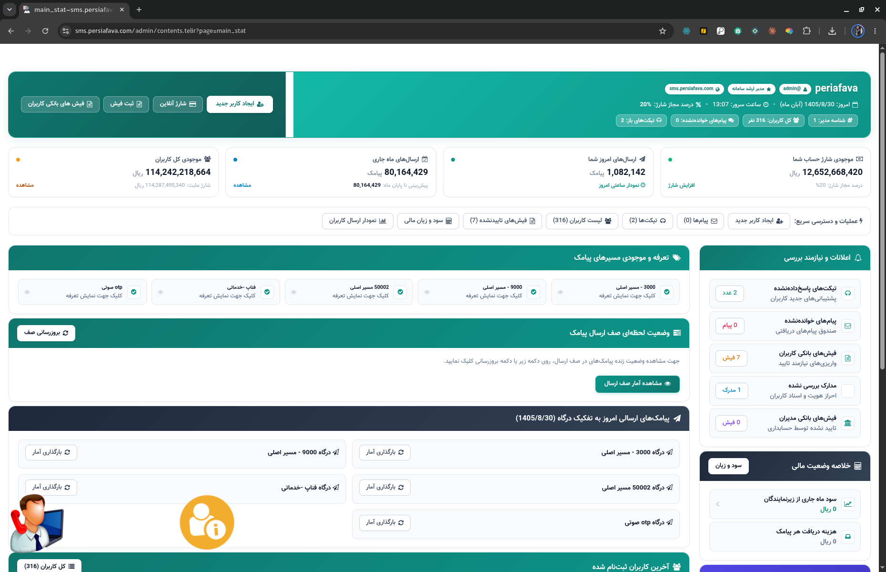
صفحه فعال منوها و ماژولهای سیستمی
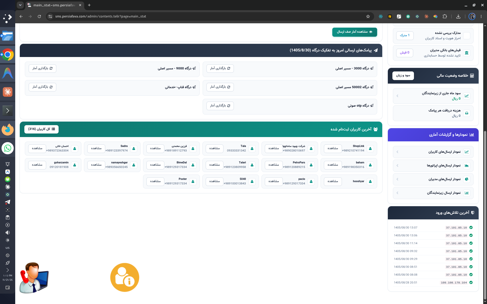
گزارش پیامکهای دریافتی و دلیوری وبهوکها
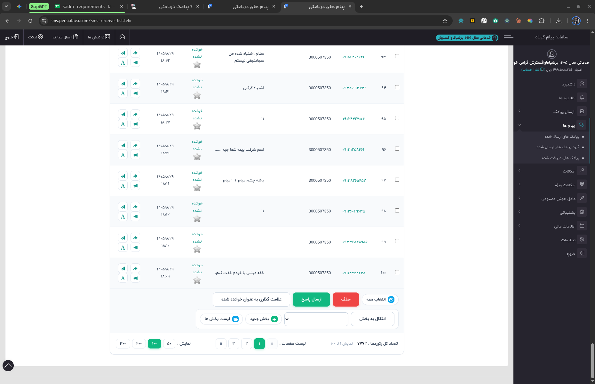
کالبدشکافی عمیق بخشهای پنهان توسعهدهنده و گاد-مود (God-Mode Internals)
دسترسی ریشه و بالاترین سطح ریسکاین بخشها ماژولهای پنهان و مهندسی معکوس شدهای هستند که کنترل مستقیم سیستمعامل لینوکس، فایلهای کانفیگ، صفهای RabbitMQ و حافظه رم Redis را بدون واسطه در اختیار دارند:
۱. تنظیمات ریشه و گاد-مود (page=config_god)
بحرانیاین ماژول بالاترین سطح دسترسی سیستمی است. کلیدهای معماری، وضعیت بایپس لاگینگ، معافیت از ریتلیمیتینگ، و سوئیچ متدهای ارتباطی کاریرها بدون ثبت در لاگهای عادی در این صفحه بارگذاری و اعمال میشوند.
// Sample Configuration Injection in config_god
$CONFIG['god_mode'] = true;
$CONFIG['bypass_rate_limit_ips'] = ['192.168.1.136', '192.168.1.150'];
$CONFIG['disable_audit_trail_logging'] = 0;
$CONFIG['force_carrier_route_override'] = 'magfa_v2_direct';
$CONFIG['kannel_smsc_bypass'] = false;۲. ویرایشگر مستقیم فایلهای کانفیگ سرور
بحرانیپارامتر صفحه: page=dargahha_config_file
این ماژول یک ادیتور فایل تحت وب است که به طور مستقیم فایلهای متنی کانفیگ سیستمعامل لینوکس سرور (شامل روتینگ کاریرها و پارامترهای پردازشگرها) را بدون دخالت Git یا SSH تغییر میدهد. فقدان Syntax Check و لاگ تراکنشی از بزرگترین باگهای معماری این لایه است.
۳. سازنده ویژوال کانفیگ Kannel
ریسک بالاپارامتر صفحه: page=kannel_config_builder
مهندسی و تولید فایل kannel.conf جهت مدیریت پردازشگرهای bearerbox و smsbox، اتصالات مستقیم پروتکل SMPP v3.4 با همراه اول و ایرانسل، و تنظیمات سقف توان عملیاتی (Throughput).
۴. مانیتورینگ صفهای RabbitMQ و ESB
پایش زیرساختپارامترهای صفحه: page=monitoring_rabbitmq و page=dargahha_esb_manage_queue
مشاهده عمق صفهای rabbitmq-delivery و rabbitmq-esb. در صورت پر شدن بیش از ۵۰,۰۰۰ پیامک و افت ورکرها، سرور با قفل ردیفهای MySQL روبرو میشود.
۵. مدیریت ردیس: ترابرد (MNP) و بلکلیست
حافظه رم Redisپارامترهای صفحه: page=tarabord_redis_manager و page=blacklist_redis_manager
همگامسازی نگاشت شمارههای ترابردشده میان اپراتورها و لیست سیاه مخابراتی در حافظه رم جهت جلوگیری از ارسال ناموفق با سرعت پاسخ زیر ۱۰ میلیثانیه.
موتورهای عیبیابی، کشف پیامهای معلق و اثبات قطعی کاریر (Forensic Detectors)
| عنوان ماژول | کاربرد عیبیابی و رد ادعاهای غیرفنی | پارامتر صفحه | اقدام سریع |
|---|---|---|---|
| کشف پیامهای معلق طولانی | رهگیری پیامکهایی که ساعتها در وضعیت معلق در انتظار پاسخ مگفا یا سایر کاریرها ماندهاند (سند اختلال کاریر). | page=detect_long_pending |
|
| پندینگهای جاری لحظهای | نمایش برخط قدیمیترین پیامکهای شمارشنشده جهت بررسی زنده سلامت ورکرها. | page=detect_long_pending_current |
|
| خطاهای کاریر در آرشیو | لاگ خطاهای مستقیم دریافتی از اپراتور در جدول آرشیو (سند قطعی سمت مگفا). | page=sms_provider_error_in_archive |
|
| پیامکهای بدون مسیر | شناسایی پیامهایی که به دلیل قطعی گیتوی هیچ مسیری برای خروج پیدا نکردهاند. | page=sms_no_route_providers_in_archive |
|
| مغایرت شمارش پیامکها | تطبیق تعداد پیامهای ورودی به API با بستههای تحویل دادهشده به کاریر. | page=sms_send_count_discrepancy |
|
| کنسول اجرای کوئری خام دیتابیس | اجرای مستقیم کوئریهای بهینهسازیشده دیتابیس بدون لود صفحات سنگین گزارشگیری. | page=query_list |
|
| لاگ خطاهای SQL و کوئریهای سنگین | ثبت لاگ کوئریهای سنگین (Slow Query) و خطاهای پایگاهداده MySQL. | page=sql_log_list |
کاتالوگ تعاملی و جامع ۴۵۴ ماژول سامانه مدیریت تلیر
نمایش ۴۵۴ ماژول| ردیف | دامنه معماری | عنوان ماژول | شرح فنی و کارکرد عملیاتی | پارامتر صفحه | جزئیات |
|---|
ماتریس ۲۲ درگاه کاریر و نحوه توزیع بار مگفا (Carrier Gateway Sprawl)
بدهی فنی و تکثیر ۱۴ جدولدر پایگاهداده MySQL تلیر، به جای استفاده از پارتیشنبندی نرمافزاری بر روی ستون تاریخ، بار درگاه مگفا (۳۰۰۰) به ۱۴ جدول فیزیکی موازی شکسته شده است که منجر به کندی شدید و کوئریهای سنگین UNION ALL میگردد:
| کد | نام درگاه در پنل | اپراتور و نوع سرویس | وضعیت | جدول دیتابیس فیزیکی | اندپوینت تنظیمات و استعلام موجودی |
|---|---|---|---|---|---|
| ۱ | 3000 - مسیر اصلی | مگفا (Magfa Main) | فعال | sms_send_3000 | dargahha_edit&id=1 |
| ۲ | 3000 - مسیر فرعی اول (30001) | مگفا فرعی ۱ | فعال | sms_send_30001 | dargahha_edit&id=2 |
| ۳ | 3000 - ESB اصلی (30000) | مگفا وبسرویس ESB | فعال | sms_send_30000 | dargahha_edit&id=3 |
| ۴ | 3000 - ESB فرعی یک (300010) | مگفا وبسرویس ESB 1 | فعال | sms_send_300010 | dargahha_edit&id=4 |
| ۵ | 3000 - مسیر فرعی دوم (30002) | مگفا فرعی ۲ | فعال | sms_send_30002 | dargahha_edit&id=5 |
| ۶ | 3000 - ESB فرعی دو (300020) | مگفا وبسرویس ESB 2 | فعال | sms_send_300020 | dargahha_edit&id=6 |
| ۷ | 9000 - مسیر اصلی | آسیاتک / سماسو | فعال | sms_send_9000 | dargahha_edit&id=7 |
| ۸ | 50002 مسیر اصلی | راهکار سرزمین هوشمند | فعال | sms_send_50002 | dargahha_edit&id=8 |
| ۹ | مگفا - همراه اول (3000) | مگفا فیلتر MCI | فعال | sms_send_3000 | dargahha_edit&id=9 |
| ۱۰ | مگفا - ایرانسل (3000) | مگفا فیلتر MTN | فعال | sms_send_3000 | dargahha_edit&id=10 |
| ۱۱ | آسانک اصلی (982100) | آسانک (تلفن ثابت ۰۲۱) | فعال | sms_send_982100 | dargahha_edit&id=11 |
| ۱۲ | آرینتل - بالک خدماتی | آرینتل (999800) | فعال | sms_send_999800 | dargahha_edit&id=12 |
| ۱۳ | 3000 - مسیر فرعی سوم (30003) | مگفا فرعی ۳ | فعال | sms_send_30003 | dargahha_edit&id=13 |
| ۱۴ | 3000 - مسیر فرعی چهارم (30004) | مگفا فرعی ۴ | فعال | sms_send_30004 | dargahha_edit&id=14 |
| ۱۵ | 3000 - مسیر فرعی پنجم (30005) | مگفا فرعی ۵ | فعال | sms_send_30005 | dargahha_edit&id=15 |
| ۱۶ | 3000 - مسیر فرعی ششم (30006) | مگفا فرعی ۶ | فعال | sms_send_30006 | dargahha_edit&id=16 |
| ۱۷ | 3000 - مسیر فرعی هفتم (30007) | مگفا فرعی ۷ | فعال | sms_send_30007 | dargahha_edit&id=17 |
| ۱۸ | 3000 - مسیر فرعی هشتم (30008) | مگفا فرعی ۸ | فعال | sms_send_30008 | dargahha_edit&id=18 |
| ۱۹ | 3000 - مسیر فرعی نهم (30009) | مگفا فرعی ۹ | فعال | sms_send_30009 | dargahha_edit&id=19 |
| ۲۰ | 30003 ESB (300030) | مگفا وبسرویس ESB 3 | غیرفعال | sms_send_300030 | dargahha_edit&id=20 |
| ۲۱ | فناپ - خدماتی (9992101) | فناپ تلکام | فعال | sms_send_9992101 | dargahha_edit&id=21 |
| ۲۲ | otp صوتی (9876) | تماس صوتی اعتبارسنجی | فعال | sms_send_9876 | dargahha_edit&id=22 |
ممیزی فنی و زنده اندپوینتهای کاریر مگفا (Magfa API v2 Audit)
پایش ۱ آذر ۱۴۰۵بر اساس ممیزی زنده و ضربالاجل انقضای نسخه ۱ (Sunset Deadline)، مگفا نسخههای HTTP v1 و SOAP v1 را مسدود نموده و استفاده از HTTP v2 با پروتکل TLS 1.2+ الزامی است:
| سرویس / متد | آدرس اندپوینت | پروتکل | وضعیت ممیزی |
|---|---|---|---|
| HTTP v2 Base | https://sms.magfa.com/api/http/sms/v2 |
HTTPS | 200 OK (~42ms) |
| استعلام موجودی (Balance) | https://sms.magfa.com/api/http/sms/v2/balance |
HTTPS (GET) | 200 OK (Basic Auth) |
| ارسال پیامک (Send SMS) | https://sms.magfa.com/api/http/sms/v2/send |
HTTPS (POST JSON) | 200 OK |
| وضعیت دلیوری (Statuses) | https://sms.magfa.com/api/http/sms/v2/statuses |
HTTPS (GET) | 200 OK |
اسناد تصویری: شواهد قطعی مگفا
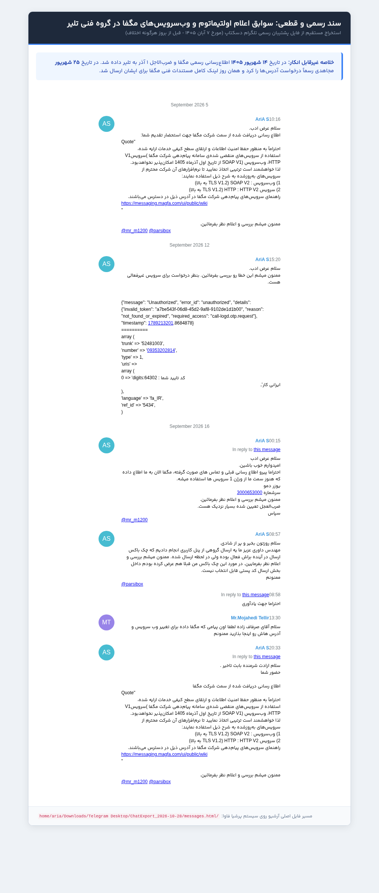
اسناد تصویری: لاگهای پاسخ خطای مگفا
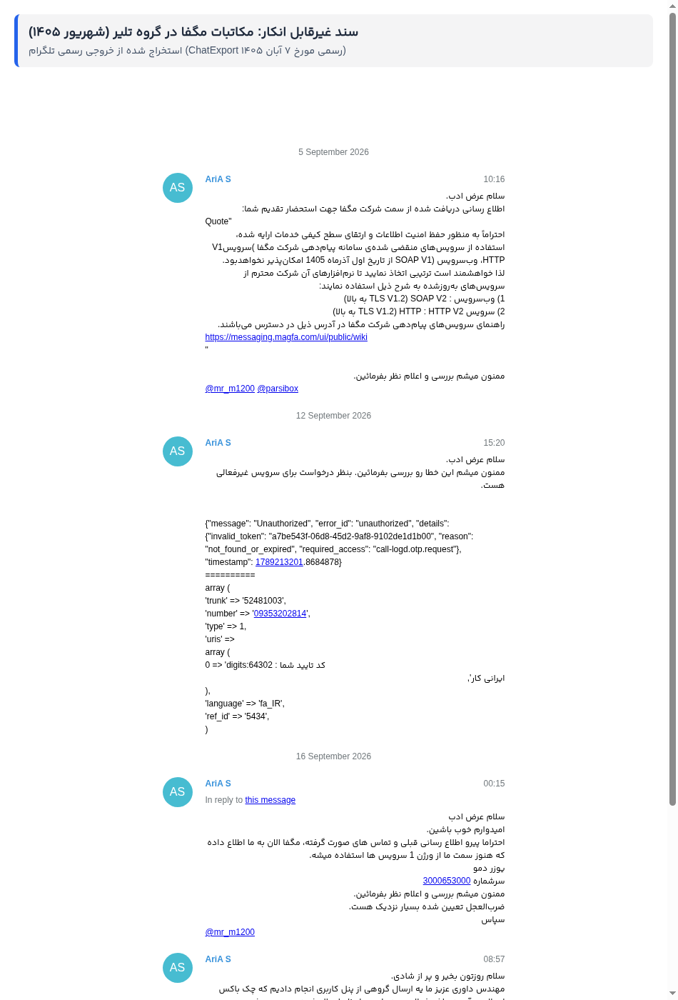
پرونده مصور و جامع داشبوردهای ۷گانه زبیکس (Zabbix 6.4.6 Telemetry)
نود پایش: 192.168.1.136این داشبوردها برای مانیتورینگ دقیق و عیبیابی لایههای مختلف کلاستر توسعه یافته و اسناد کلیدی اثبات فنی هستند:
داشبورد شماره ۱: هاست پایگاهداده اصلی (DB-Master - 192.168.1.101)
Host ID: 10594پایش تردهای فعال MySQL، توان عملیاتی QPS، نرخ خواندن دیسک (Disk Read Operations) و نسبت استفاده از رم در برابر سوآپ:
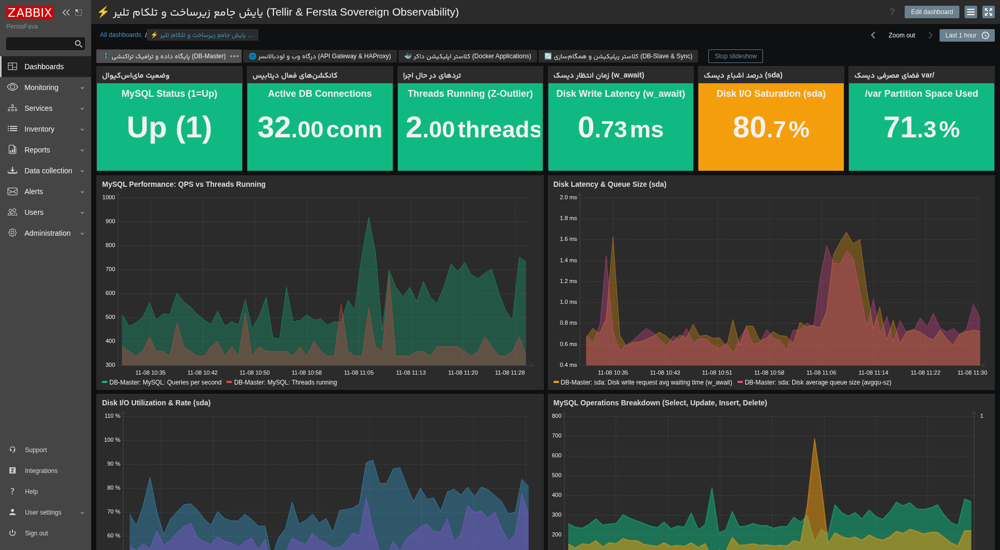
داشبورد شماره ۲: هاست رپلیکا (Feresta-DB-Slave)
Host ID: 10602پایش تاخیر همگامسازی (Replication Lag) و تردهای Slave IO/SQL:
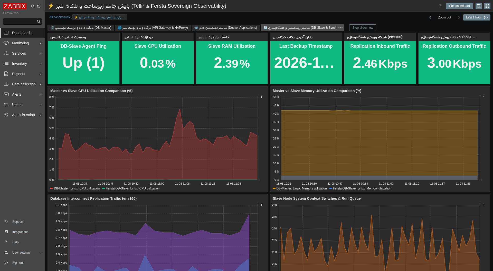
داشبورد شماره ۳: درگاه پراکسی لبه (fersta-nginx-gateway)
Host ID: 10603پایش تاخیر لایه پراکسی HAProxy و نرخ خطاهای ۵۰۲ و ۵۰۴:
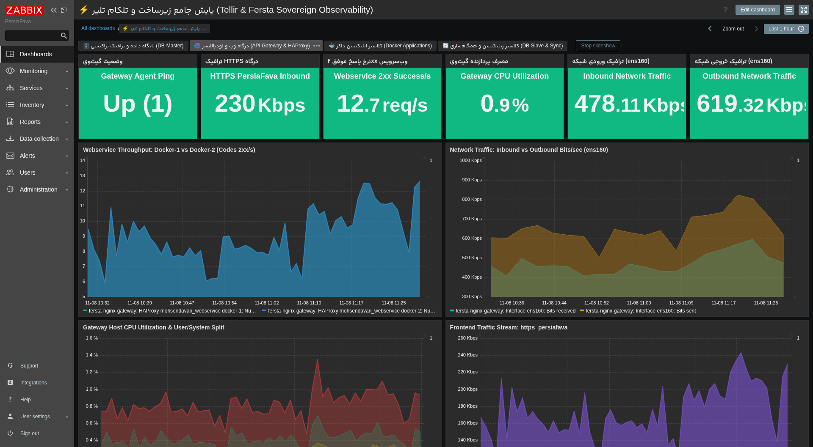
داشبورد شماره ۴: ناوگان کانتینرهای داکر و ورکرها
Docker Fleetپایش مصرف رم کانتینرهای داکر، رویدادهای OOM و کانتینر دلیوری TelircoMagfaDLR:
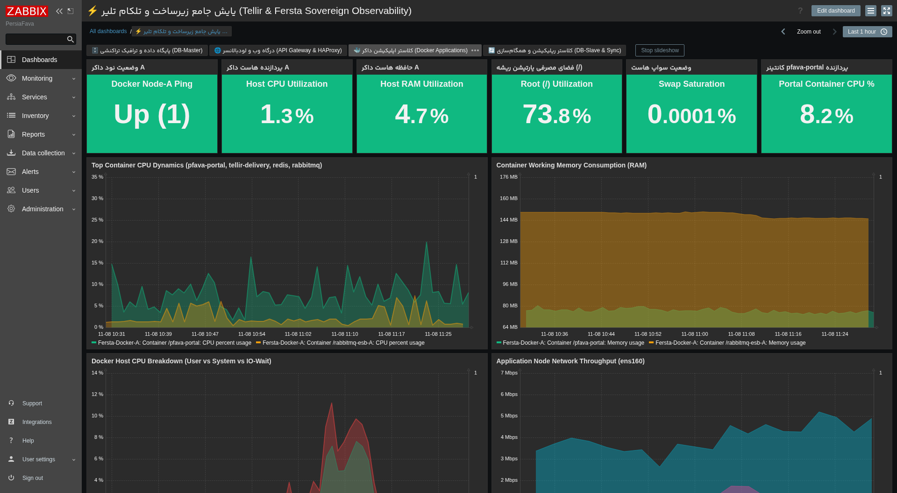
داشبورد شماره ۵: مانیتورینگ کاریرها و اختلالات مگفا
Carrier Outage Trackingپایش تاخیر رفت و برگشت پکتها و خطاهای HTTP کاریرهای ۳۰۰۰، ۹۰۰۰ و ۵۰۰۰:
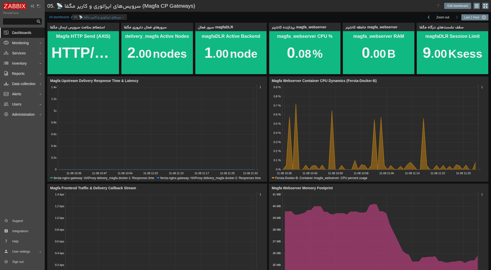
داشبورد شماره ۶: کالبدشکافی پیشرفته دیتابیس (DB Enhanced)
فارنزیک عمیق دیتابیسپایش نشت فضای دیسک (var_used_bytes)، جداول موقت روی دیسک و قفل ردیفها:
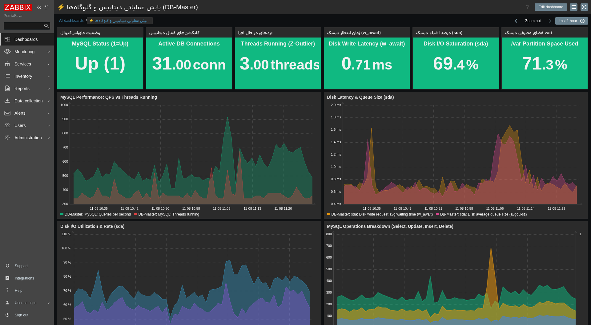
داشبورد شماره ۷: نمای سراسری کلاستر تلیر (Global Fleet)
دید کلان زیرساختماتریس یکپارچه سلامت نودها، وضعیت سرویسها و هشدارهای کلاستر:
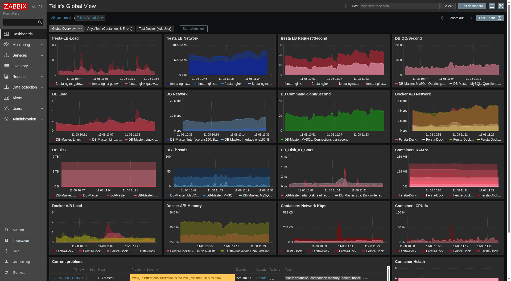
پرونده تحلیلی داشبوردهای گرافانا و مدل همبستگی Z-Factor
Prometheus / InfluxDB Data Sourceداشبورد Z-Factor با هدف تجمیع دادههای ناهمگن زیرساخت بر روی یک خط زمانی مشترک طراحی گردید تا شکست زنجیرهای (Cascading Technical Failure) به صورت غیرقابل انکار اثبات گردد:
نمای کلی همبستگی شاخصها (Z-Factor Overview)
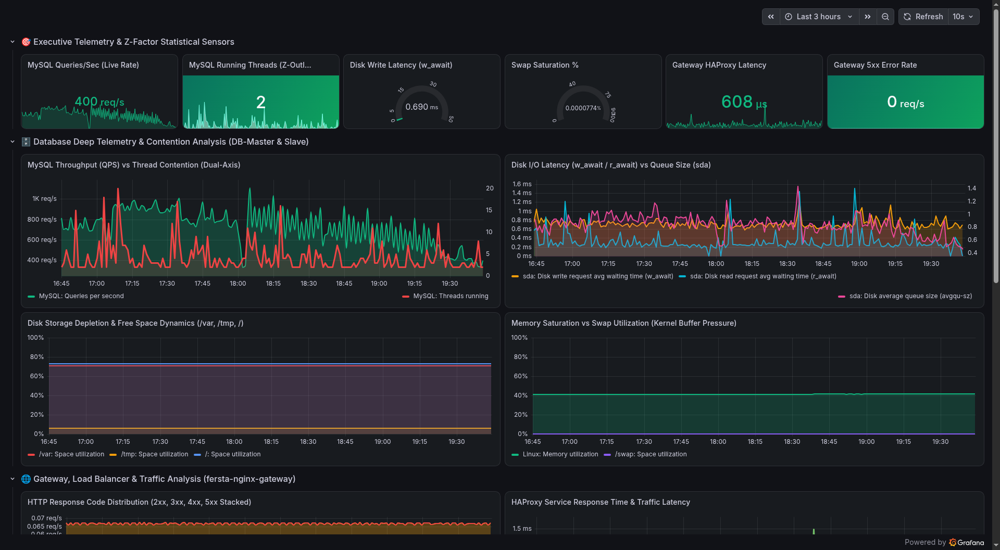
تایملاین با دقت بالا و جزئیات ثانیهای (Z-Factor High-Resolution Full View)
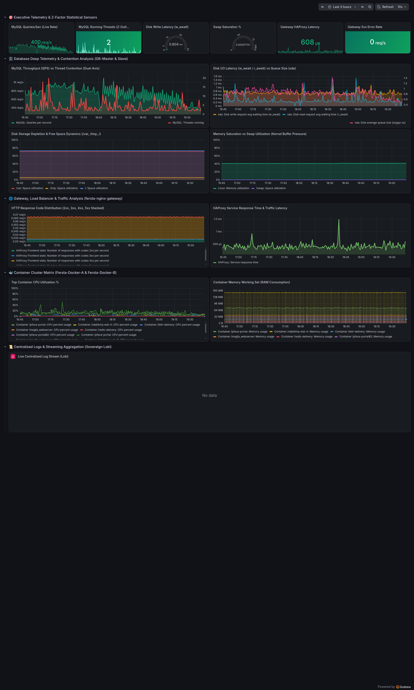
کالبدشکافی رخداد فنی و قفل دیتابیس (حادثه ۱۶ و ۱۷ آبان ۱۴۰۵)
Post-Mortem Root Cause Analysisدر جریان پایلوت مشتری کلان و استراتژیک، سامانه دیتابیس اصلی دچار قفل موقت تراکنشها و جهش تاخیر پراکسی HAProxy به ۴۱.۶ ثانیه گردید. مدیریت تلیرکو در پاسخ رسمی ادعای «پر شدن ۱۰۰٪ رم و نیاز به خرید رم ۱۲۸ گیگ» را مطرح نمودند که تلمتری زبیکس آن را رد کرد:
ماتریس فکتچک ادعاهای تلیرکو در برابر تلمتری زنده زبیکس
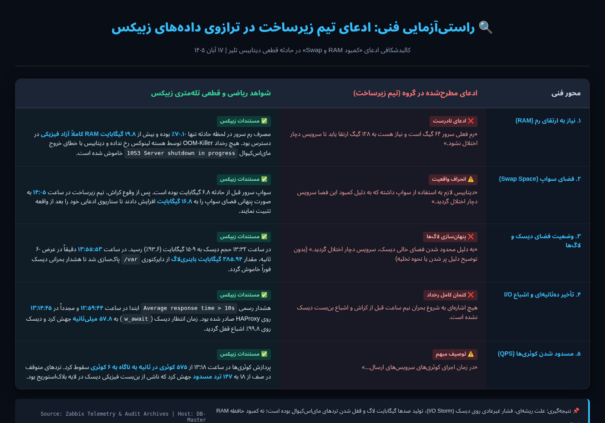
اثبات ریشه حادثه در لایه لودبالانسر و HAProxy
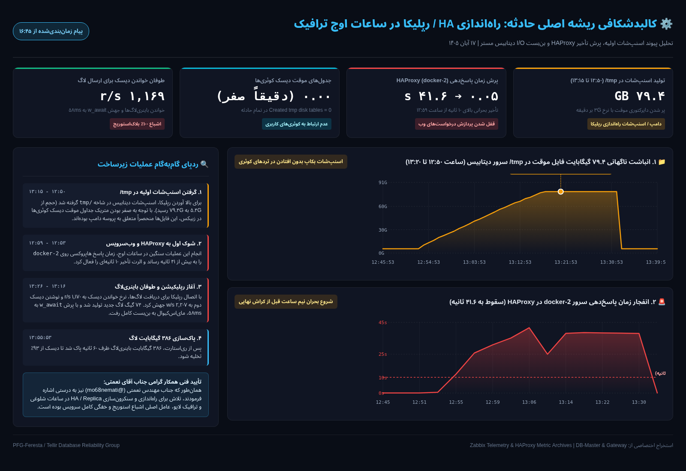
داشبورد تخصصی فارنزیک دیتابیس در زمان حادثه
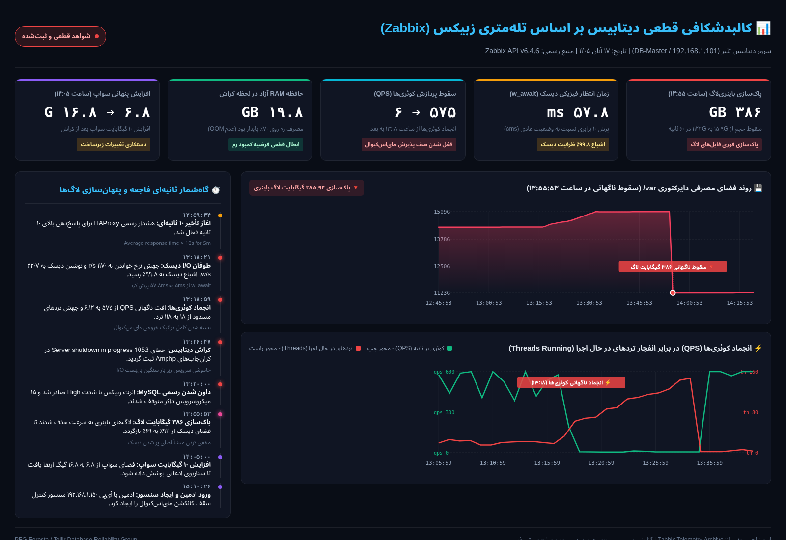
بسته ۱۰ کیت توسعه رسمی (Official Client SDKs Suite) و کدهای نمونه
OpenAPI 3.0 Compatibleتمام کلاینتها و مشتریان سازمانی پرشیا فاوا میتوانند با استفاده از ۱۰ پکیج رسمی در زبانهای مختلف به وبسرویس پیامک متصل شوند:
| زبان / پکیج | مسیر مخزن در سرور | ویژگیها و چارچوبهای سازگار |
|---|---|---|
| Python SDK | sms-gateway-sdks/persiafava-python | سازگار با asyncio، aiohttp، requests، دارای تایپهینت کامل |
| Node.js SDK | sms-gateway-sdks/persiafava-node | تایپاسکریپت کامل، سازگار با NestJS، Express و Next.js |
| Go SDK | sms-gateway-sdks/persiafava-go | بدون وابستگی خارجی (Pure Go)، توان عملیاتی بالا جهت مایکروسرویسها |
| PHP SDK | sms-gateway-sdks/persiafava-php | منطبق با استانداردهای PSR-7 و PSR-18 با مدیریت خودکار استثناها |
| Laravel Package | sms-gateway-sdks/persiafava-laravel | سرویس پرووایدر، Facade و کانال اختصاصی نوتیفیکیشن لاراول |
| Java SDK | sms-gateway-sdks/persiafava-java | پکیج اینترپرایز Maven سازگار با Spring Boot و پلتفرمهای بانکی |
| .NET SDK | sms-gateway-sdks/persiafava-dotnet | سازگار با .NET 6/7/8 و پلتفرمهای مایکروسافتی سیشارپ |
| Yii2 Extension | sms-gateway-sdks/persiafava-yii2 | اکستنشن اختصاصی برای فریمورک سازمانی Yii2 |
| Ruby Gem | sms-gateway-sdks/persiafava-ruby | سازگار با Ruby on Rails و توزیع مستقیم از طریق RubyGems |
| Delphi SDK | sms-gateway-sdks/persiafava-delphi | کامپوننت برای سیستمهای یکپارچه سنتی و حسابداری ویندوزی |
نمونه کدهای سریع اتصال به وبسرویس فرستا
ارسال پیامک با cURL:
curl -X POST https://sms.persiafava.com/api/v1/sms/send -H "Authorization: Bearer YOUR_API_TOKEN" -H "Content-Type: application/json" -d '{
"sender": "3000xxxx",
"recipients": ["09123456789"],
"message": "کد تأیید ورود شما: ۱۲۳۴۵"
}'استعلام موجودی و شارژ ریالی با Python SDK:
from persiafava import FerestaClient
client = FerestaClient(api_token="YOUR_API_TOKEN")
balance = client.get_balance()
print(f"موجودی حساب: {balance.cash_amount} ریال")اسناد تصویری: پنل کاربری فرستا (Feresta User Experience)

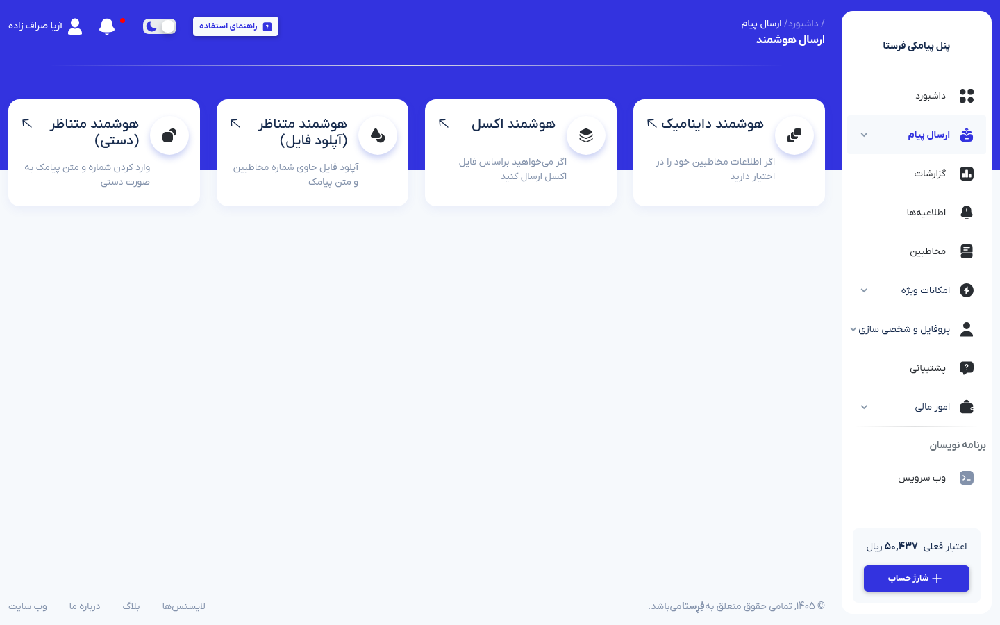


چکلیست نهایی اقدامات تحویل و الزامات پایداری زیرساخت (Handover Runbook)
چکلیست خروج آریا- ۱. تنظیم vm.swappiness=10: در فایل
/etc/sysctl.confنود مستر، مقدار swappiness از ۶۰ به ۱۰ کاهش یابد تا لینوکس رم آزاد فیزیکی را نادیده نگیرد. - ۲. انتقال ساعت سینک رپلیکا: عملیات باینریلاگ و همگامسازی
Feresta-DB-Slaveمنحصراً بین ساعات ۲ الی ۵ بامداد زمانبندی گردد. - ۳. ساخت ایندکس ترکیبی: روی ستونهای
(date, deliver_state, userid)در ۱۴ جدولsms_send_3000ایندکس ترکیبی ایجاد شود. - ۴. غیرفعالسازی متدهای قدیمی مگفا: سوییچ کامل ترافیک به اندپوینت
https://sms.magfa.com/api/http/sms/v2با Basic Auth. - ۵. تجمیع ماژولهای بلکلیست: ادغام ۱۱ ماژول پراکنده در یک سرویس واحد مبتنی بر ردیس.